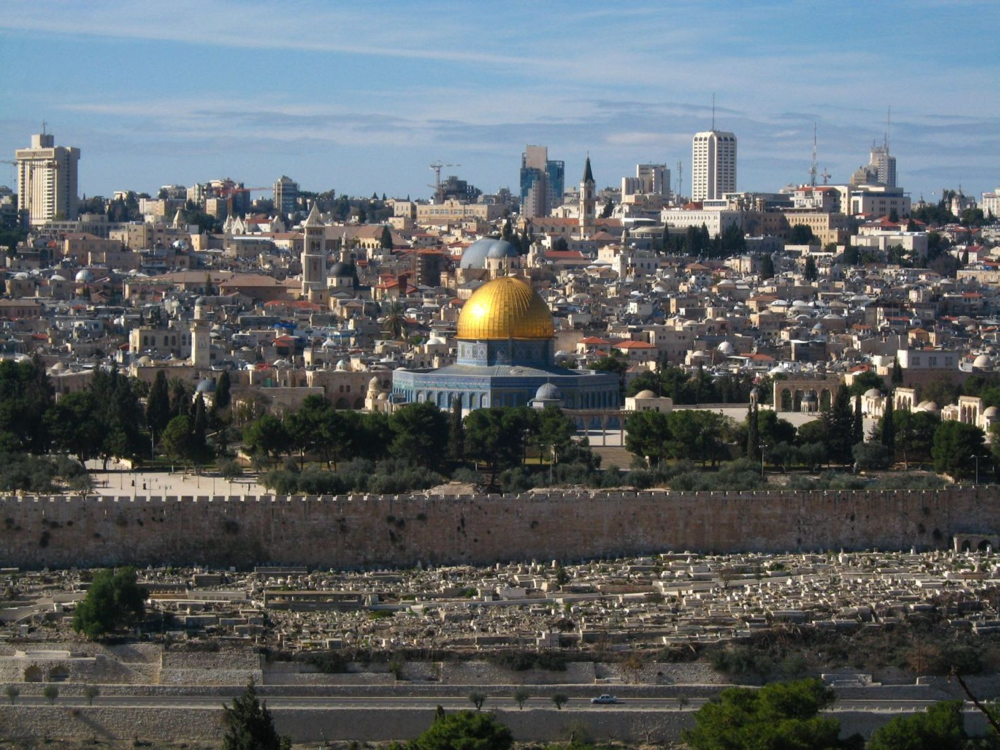
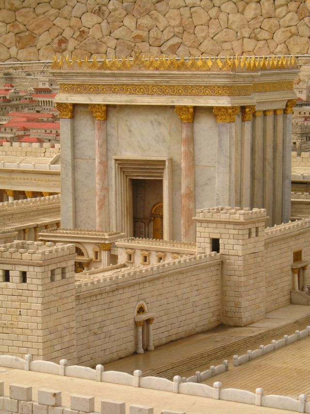
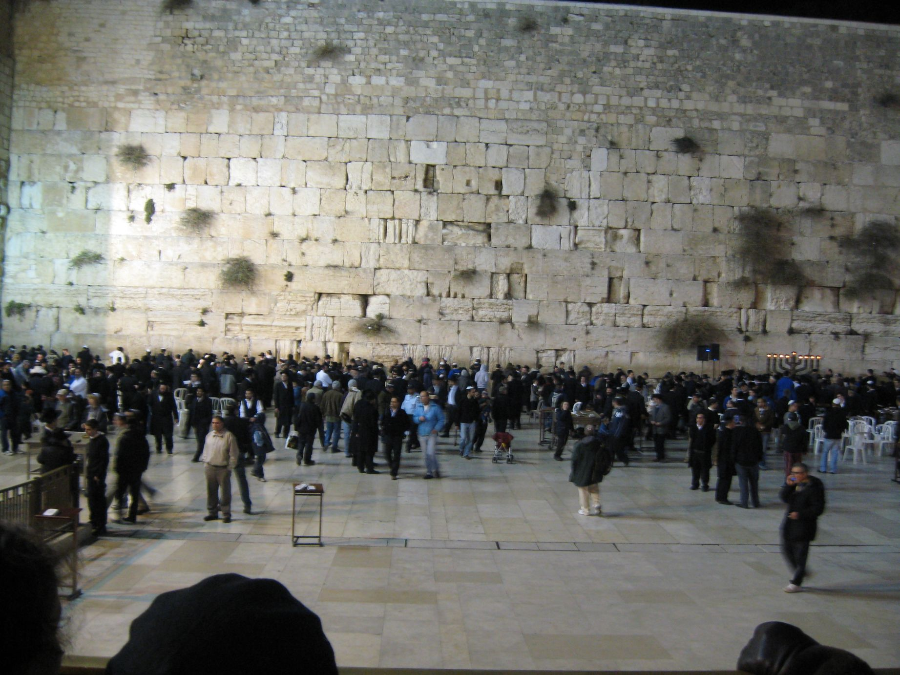
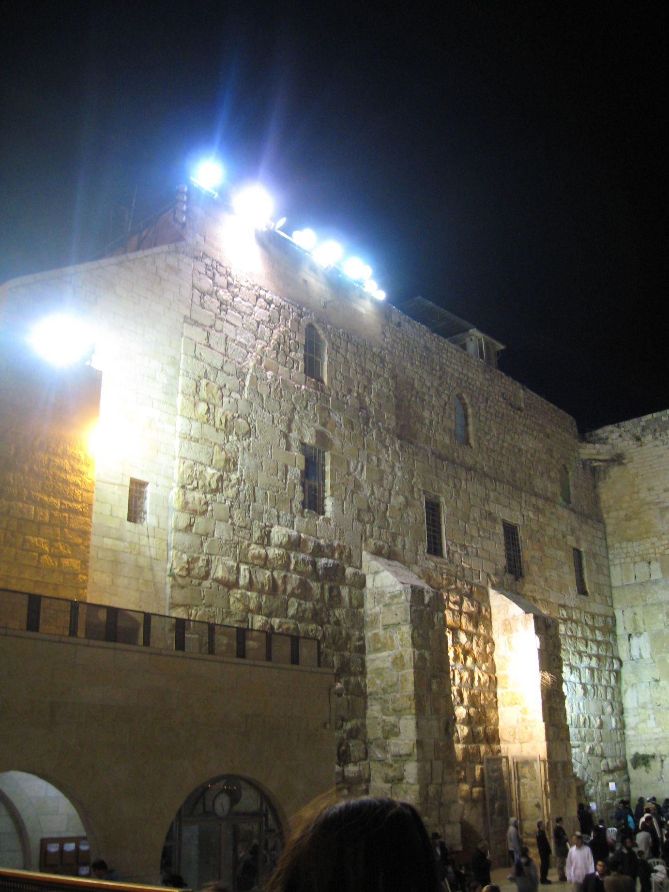
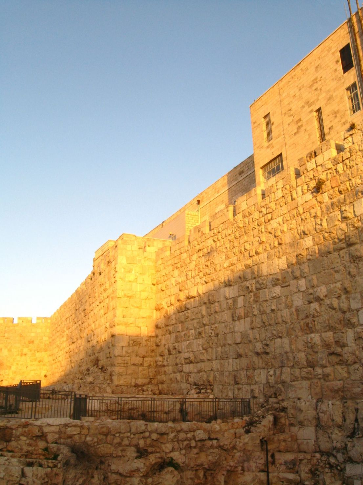
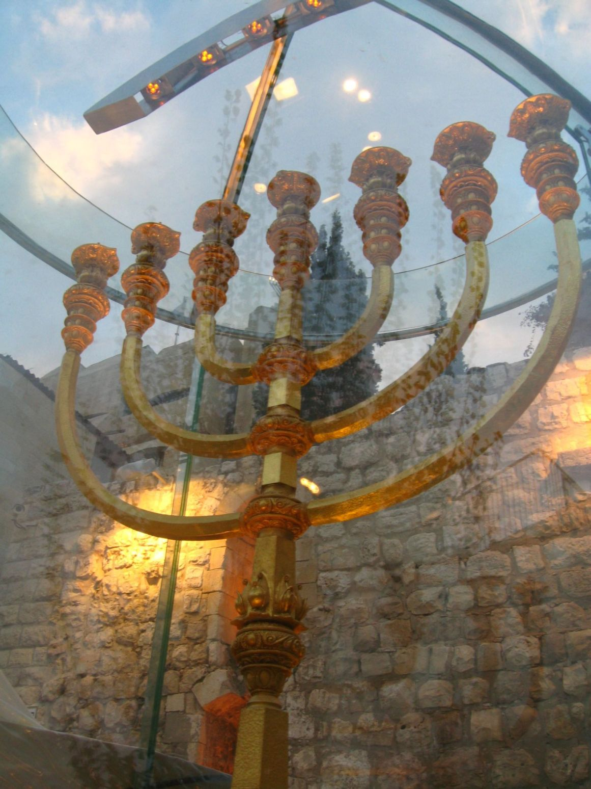

14. „Proście o pokój dla Jeruzalemu! Niech żyją w spokoju ci, którzy cię miłują!”
„Proście o pokój dla Jeruzalemu!
Niech żyją w spokoju ci, którzy cię miłują!”
(Ps. 122:6, BW)
Dlaczego mamy prosić o pokój dla Jeruzalemu?
Druga część tego wersetu w przekładzie Biblii Gdańskiej brzmi:
„Niech się szczęści tym, którzy cię miłują.”
natomiast przekład Biblii Warszawsko-Praskiej pisze:
„Kto ciebie kocha, niech w tobie szuka schronienia.”
W tym kontekście kryją się słowa, które obiecują pokój tym, którzy miłują to miasto.

Czym różni się ono od wszystkich innych i dlaczego trzeba je kochać?
„Pan powiedział do Dawida i do Salomona, jego syna tak: W tej świątyni i w Jeruzalemie, które wybrałem spośród wszystkich plemion Izraela, umieszczę moje imię na wieki” (2 Król. 21:7b, BW*).

Od czasów, kiedy została tam zbudowana przez Salomona Świątynia Boża, było to miejsce pielgrzymek wszystkich Żydów z całego ówczesnego świata (i nie tylko – przykład królowej Saby - 2 Kron. 9:3-4). Tylko tam można było składać ofiary Bogu. Również w tym miejscu Najwyższy miał szczególnie wysłuchiwać modlitw:
„I będą moje oczy otwarte, i moje uszy uważne na modlitwę w tym miejscu zanoszoną. Bo oto wybrałem i poświęciłem tę świątynię, aby tam było moje imię na wieki, i moje oczy, i moje serce tam będą skierowane po wszystkie dni” (2 Kron. 7:15-16, BW*) - powiedział Bóg.
Zaprawdę zadziwia niezwykłość tego miejsca, gdyż modlitwy miały być wysłuchane nawet wtedy kiedy:
„(…) będą się modlić do ciebie zwróceni w stronę swojej ziemi, którą dałeś ich ojcom, i w stronę miasta, które wybrałeś, i w stronę przybytku, który zbudowałem dla imienia Twojego, Ty racz wysłuchać w niebie, w miejscu, gdzie mieszkasz, ich modlitwy i błagania i uznać ich prawo, i odpuścić twojemu ludowi to, czym zgrzeszyli przeciwko tobie, i wszystkie wykroczenia, którymi zawinili przeciwko tobie, i wzbudzić litość nad nimi u tych, którzy ich uprowadzili, aby się nad nimi zlitowali”(1 Król. 8:48b-50).
Bogobojni Żydzi właśnie od wieków modlili się kierując swoje oblicza właśnie w tym kierunku, gdziekolwiek na świecie znajdowali się w rozproszeniu. Tak też czynił prorok Daniel na wygnaniu w Babilonii (Dan. 6:11) - nawet wtedy gdy Świątynia była już zburzona! O tym, że zanoszone modlitwy zostały wysłuchane niech świadczy fakt odbudowy Jeruzalem oraz Świątyni po powrocie z niewoli babilońskiej, o co modlił się Daniel (Dan. 9:17-19).

Dlatego i dziś wiele osób uznaje niezmienność tej zasady modląc się w miejscu, gdzie stała zburzona ponownie Świątynia (pozostała z niej tylko zachodnia ściana, tzw. Kotel).
Zwolennicy teologii zastąpienia twierdzą jednak, iż od czasu kiedy Bóg zburzył swoją Świątynię i rzekomo odrzucił swój naród, to miasto przestało być wybranym miejscem w oczach Boga.

Co sam Bóg mówi na ten temat?
„Albowiem Pan wybrał Syjon i chciał go na swoje mieszkanie. Tu miejsce odpocznienia mego na wieki; tu zamieszkam, bo upodobałem je sobie” (Ps. 132:13-14, BW).
Z tego wersetu wynika, iż Najwyższy wybrał sobie Syjon [1] na wieki, czyli na zawsze.
„Na twoich murach, Jeruzalem, postawiłem stróżów: przez cały dzień i przez całą noc, nigdy nie umilkną. Wy, którzy wyznajecie Pana, nie milczcie! I nie dajcie mu spokoju, dopóki nie odbuduje Jeruzalemu i dopóki nie uczyni go sławnym na ziemi!” (Izaj. 62:6-7, BW*, por. Izaj. 49:14-16).
Tak więc dla wyznawców Najwyższego Boga losy tego miasta nie powinny być obojętne.
Na czym będzie polegała ‘sławność’ Jeruzalemu?
„Pan zagrzmi z Syjonu i wyda swój donośny głos z Jeruzalemu, tak że zadrżą niebiosa i ziemia. Lecz dla swojego ludu Pan jest ucieczką i twierdzą dla synów Izraela. I poznacie, że Ja, Pan, jestem waszym Bogiem, który mieszkam na Syjonie, świętej mojej górze. Wówczas Jeruzalem będzie święte, a obcy już nie będą przez nie przechodzili” (Joela 3:21-22, BW*).
Kontekst tej wypowiedzi pochodzi z fragmentu, który mówi o czasach ostatecznych i zbliżającym się Sądzie Bożym (Joela 3:18-20). Wynika z niej, iż wszyscy mają dowiedzieć się, iż Bóg mieszka na Syjonie.

„Tak mówi Pan Zastępów: Żywię żarliwą miłość do Syjonu, zapłonąłem wielką o niego zazdrością. Tak mówi Pan: Wrócę na Syjon i zamieszkam w Jeruzalemie. Jeruzalem znów będzie nazwane grodem wiernym, a góra Pana Zastępów górą świętą” (Zach. 8:2-3. BW*, por. Zach. 1:14).
„W owym czasie będą nazywać Jeruzalem tronem Pana i tam w Jeruzalemie zgromadzą się wszystkie narody w imieniu Pana i już nie będą postępować według uporu swojego złego serca” (Jerem. 3:17, BW).
„I stanie się w dniach ostatecznych, że góra ze świątynią Pana będzie stać mocno jako najwyższa z gór i będzie wyniesiona ponad pagórki, a tłumnie będą do niej zdążać wszystkie narody. I pójdzie wiele ludów, mówiąc: Pójdźmy w pielgrzymce na górę Pana, do świątyni Boga Jakuba, i będzie nas uczył dróg swoich, abyśmy mogli chodzić jego ścieżkami, gdyż z Syjonu wyjdzie zakon, a słowo Pana z Jeruzalemu. Wtedy rozsądzać będzie narody i rozstrzygać sprawy wielu ludów. I przekują swoje miecze na lemiesze, a swoje włócznie na sierpy. Żaden naród nie podniesie miecza przeciwko drugiemu narodowi i nie będą się już uczyć sztuki wojennej” (Izaj. 2:2-3, BW*).
Powyższy opis odniesiono do czasów ostatecznych, a ponieważ żyjemy obecnie w owych czasach, wkrótce można spodziewać się wypełnienia tych słów. Wynika z nich kilka ważnych informacji:
1. W Jeruzalem będzie Świątynia.
2. Będą do niej pielgrzymowały narody, aby być pouczane o drogach Bożych.
3. Słowo Boże wyjdzie z Jeruzalem.
4. Ostatecznie narody przestaną przeciwko sobie walczyć.
W Izraelu trwają przygotowania do odbudowy Świątyni, powołano w tym celu Instytut Świątynny. Są już plany nowej Świątyni, odtworzono elementy jej wyposażenia oraz akcesoria świątynne.

Złota Menora
Obecnie coraz więcej osób z różnych państw świata przyłącza się do obchodów biblijnych świąt, które celebruje się uroczyście w Jeruzalem. Zapraszam do odwiedzenia strony internetowej:
na której znajduje się relacja z obchodów Święta Namiotów 2008, w którym wzięło udział około 8 tys. chrześcijan z ponad 100 krajów świata.
Oto link z zaproszeniem na Swieto Namiotow 2010: www.icej.org/articles/feast_of_tabernacles
To są zwiastuny tego, co nastanie w przyszłości.
„A Jeruzalem będzie mi radością, chwałą i ozdobą u wszystkich narodów ziemi. A gdy one usłyszą o wszelkim dobru, które im wyświadczam, ulękną się i zadrżą z powodu wszelkiego dobra i wszelkiego dobrobytu, które Ja im przygotowuję” (Jerem. 33:9, BW).
Bóg i jego słudzy niezmiennie kochają Jeruzalem i zależy im na jego szczęściu.
„Ze względu na Syjon nie będę milczał i ze względu na Jeruzalem nie spocznę, dopóki nie wzejdzie jak jasność jego sprawiedliwość i nie zapłonie jego zbawienie jak pochodnia” (Izaj. 62:1, BW).
„Ty powstaniesz, zmiłujesz się nad Syjonem, Bo czas zlitować się nad nim, gdyż nadeszła właściwa pora. Słudzy twoi bowiem kochają jego kamienie i żalą się nad jego ruiną. Narody bać się będą imienia Pana, a królowie ziemscy chwały twojej. Gdy Pan odbuduje Syjon, ukaże się w chwale swojej” (Ps. 102:14-17, BW*).
Okazuje się, że nasze zbawienie i szczęście może zależeć od losów Jeruzalemu:
„Radujcie się z Jeruzalemem i cieszcie się z nim wszyscy, którzy je miłujecie! Wykrzykujcie radośnie z nim wszyscy, którzy jesteście po nim w żałobie, abyście ssali do syta pierś jego pociechy, abyście napili się i pokrzepili potęgą jego chwały” (Izaj. 66:10, BW*).
„Niech ci błogosławi Pan z Syjonu, abyś oglądał szczęście Jeruzalemu po wszystkie dni życia twego!” (Ps. 128:5, BW).
Więcej na ten temat w kolejnych rozdziałach.
--------------
Książka
MISZKAN
Pierwszy Boży Przybytek

IZRAELICI a Żydzi
Jeżeli Jerozolima stała się miejscem pielgrzymek od chwili wybudowania tam, przez Salomona, Świątyni Bożej, to, na pewno, pielgrzymującymi mogli być TYLKO IZRAELICI, a nie Żydzi, ponieważ wtedy istniał TYLKO DWUNASTOPOKOLENIOWY IZRAEL, bez podziałów i bez jakichkolwiek zamiennych nazw dodatkowych!
Bóg podzielił SWÓJ NARÓD za odstępstwo dopiero po śmierci Salomona i choć od tego momentu zaistniała Juda jako odrębne państwo, i zaczęto określać jej mieszkańców JUDEJCZYKAMI, to nadal IZRAELITÓW nazywano IZRAELITAMI, a nie Żydami. Nazwę: Żydzi, zamiast: IZRAELICI, zaczęto używać kilkaset lat później – kiedy tę zmianę zaakceptował STWÓRCA IZRAELA?
Daniel był synem judzkim, a nie Żydem (Daniela 1: 6)!
Modlitwy, uprowadzonych do niewoli, zostały wysłuchane, ponieważ modlili się, zwróceni w stronę swojej ziemi, JUDEJCZYCY!
Bóg nie odrzucił nigdy SWEGO narodu (Jer. 31: 37), ani Jerozolimy, ani Syjonu i „JEST ucieczką i twierdzą dla SYNÓW IZRAELA” (Joela 3: 21). Czyimi synami są Żydzi?